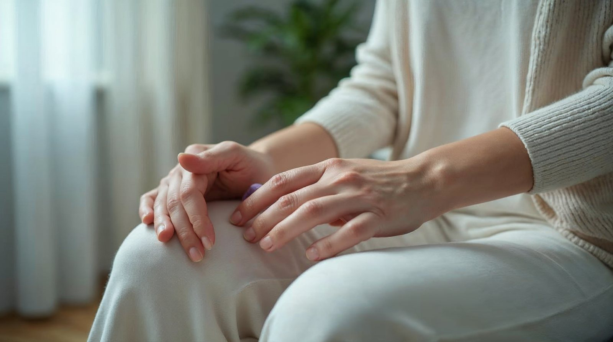
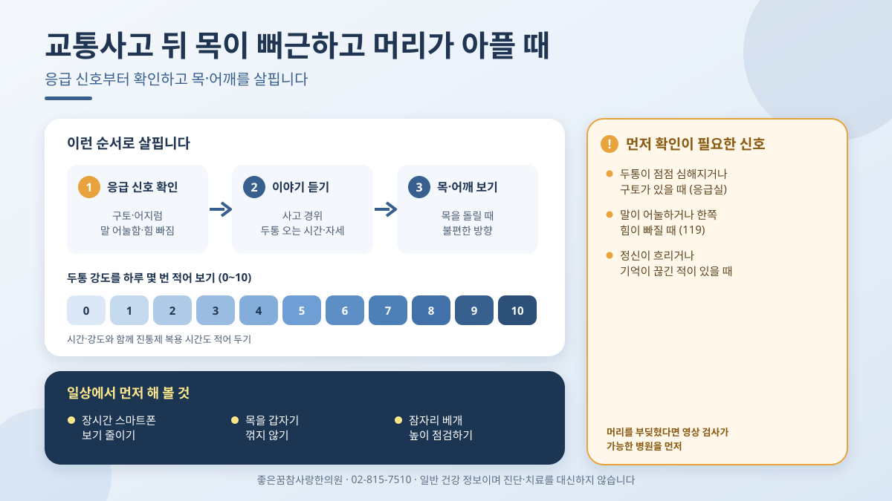

이종호 한의사 감수좋은꿈참사랑한의원 대표원장 (한의사 면허번호 19769)발행 2026-11-23 · 수정 2026-11-26
이 글의 차례
교통사고 뒤 목이 뻐근하면서 뒷머리가 지끈거리는 경우는 목과 어깨 근육의 긴장과 관련된 경우가 많지만, 머리를 부딪혔거나 두통이 점점 심해진다면 영상 검사가 먼저입니다. 구토, 어지럼, 말 어눌함, 한쪽 힘 빠짐 같은 신호가 없는지부터 확인한 뒤 목·어깨 상태를 살핍니다.
사고 직후는 물론 며칠이 지난 뒤라도 의식이 흐려지거나, 두통이 갑자기 심해지며 토하거나, 팔다리에 힘이 빠진다면 한의원을 찾기 전에 바로 가까운 응급실로 가세요. 목과 두통을 함께 살피는 일은 이런 신호가 없다는 것을 확인한 다음의 순서입니다.
왜 이런 불편이 생길 수 있나요
- 충격으로 목 주변 근육이 굳으면 뒷머리와 관자놀이 쪽으로 당기는 두통이 함께 오기도 합니다.
- 사고 뒤 긴장과 얕은 잠이 두통을 더 자주 느끼게 할 수 있습니다.
- 휴대폰을 오래 보거나 고개를 숙이는 자세가 목의 부담을 더할 수 있습니다.
- 머리를 부딪힌 경우에는 시간이 지나 증상이 나타나기도 해 영상 검사로 먼저 확인합니다.
- 잠자리 베개가 맞지 않으면 아침에 목과 뒷머리가 더 뻐근할 수 있습니다.
먼저 이렇게 여쭙니다
- 사고 때 머리를 부딪혔나요?
- 두통이 점점 심해지고 있나요?
- 구토나 어지럼, 시야 이상이 있나요?
- 목을 돌릴 때 어느 쪽이 더 불편한가요?
- 두통이 하루 중 언제 더 심한가요?
스스로 점검해 보세요
- 목을 돌리거나 숙일 때 두통이 더 심해진다
- 뒷머리나 관자놀이 쪽이 당기듯 아프다
- 오후나 저녁, 화면을 오래 본 뒤 더 심해진다
- 아침에 일어날 때 목과 뒷머리가 함께 뻣뻣하다
- 사고 뒤 잠이 얕아지고 자주 깬다
- 두통이 날이 갈수록 세지거나 토한 적이 있다
- 사고 때 머리를 부딪혔거나 잠시 멍했던 기억이 있다
마지막 두 항목 가운데 하나라도 해당하면 목을 살피기보다 영상 검사가 가능한 병원 확인이 먼저이고, 두통이 점점 세지며 토한다면 가까운 응급실로 가세요.

일상에서 먼저 해 볼 수 있는 것
- 두통의 시간과 강도를 하루 몇 번 기록하기
- 장시간 스마트폰 보기 줄이기
- 목을 갑자기 꺾지 않기
- 잠자리 베개 높이 점검하기
- 두통이 있는 날은 장거리 운전과 늦은 야근 줄이기
베개는 누웠을 때 고개가 앞으로 꺾이거나 뒤로 젖혀지지 않는 높이가 편하고, 모니터는 화면 윗부분이 눈높이쯤 오도록 맞추면 고개를 숙이는 시간이 줄어듭니다. 휴대폰은 눈높이로 들어 보고, 30~40분마다 한 번씩 고개를 천천히 들어 어깨 힘을 빼 주세요.
예를 들면 이런 경우입니다
- 예를 들어 사고 뒤에도 야근을 이어 가는 직장인이 오후만 되면 뒷머리가 조여 오고 모니터를 볼수록 심해지는 경우라면, 두통이 오는 시간과 그때 하던 일을 함께 적어 오시면 자세와 화면 높이까지 같이 살필 수 있습니다.
- 예를 들어 사고 뒤 독서실에 다시 나가기 시작한 수험생이 고개를 숙여 문제를 풀 때마다 관자놀이가 지끈거리는 경우라면, 책상 높이와 공부 시간, 잠드는 시각을 함께 여쭙습니다.
- 예를 들어 조수석에서 사고를 겪은 어르신이 이틀 뒤부터 두통이 생기고 자꾸 졸린다고 하신다면, 목을 살피기 전에 가까운 응급실에서 먼저 확인받으시도록 안내합니다. 혈액을 묽게 하는 약을 드시는 분이라면 그 사실도 병원에 알려 주세요.
얼마나 지켜보고 언제 상담할까요
- 응급 신호가 없고 목을 움직일 때 뒷머리가 당기는 정도라도, 사고 뒤 새로 생긴 두통이라면 참고 지켜보기보다 진찰을 한 번 받아 두시고 하루 두세 번 두통의 시간과 세기(0~10)를 적어 보세요.
- 일주일 가까이 지나도 두통 횟수가 줄지 않거나 목을 돌리는 범위가 계속 좁다면 다시 진찰을 받아 보시길 권합니다.
- 영상 검사에서 큰 이상이 없다고 들었는데 2주 넘게 같은 두통이 이어진다면, 목 상태와 함께 생활 자세와 잠까지 살펴볼 때입니다.
- 이럴 땐 바로 가까운 응급실로 가세요. 두통이 갑자기 아주 심해지거나 점점 세지며 토하는 경우, 의식이 흐려지거나 계속 졸려 깨우기 어려운 경우, 말이 어눌하거나 한쪽 팔다리 힘이 빠지는 경우, 팔다리 저림이 점점 번지는 경우, 물체가 겹쳐 보이거나 경련이 있는 경우, 가슴이나 배가 아프거나 대소변 조절이 어려운 경우입니다.
한의원에서 함께 살필 수 있는 경우
- 응급 신호가 없고 목·어깨 긴장과 함께 두통이 있는 경우 목 상태와 생활 자세를 함께 살핍니다.
- 두통 때문에 잠이 얕아진 경우 잠과 긴장을 함께 살핍니다.
- 필요하다고 판단될 때 침, 추나 등을 이어서 씁니다.
좋은꿈참사랑한의원에서는 응급 신호가 없는지 먼저 확인하고, 사고 경위와 두통이 오는 시간·자세를 들은 뒤 목과 어깨의 움직임을 살핍니다. 필요하다고 판단될 때 침·약침·추나 등 상태에 맞는 방법을 정하고, 두통 양상이 바뀌면 바로 병원 확인을 안내합니다.
처음 오시면 사고 날짜와 병원 영상 검사 결과, 드시는 약을 알려 주세요. 진료실에서는 응급 신호가 없는지 먼저 여쭌 뒤 사고 경위와 두통 양상을 듣고, 맥을 짚고 혀와 배를 살핍니다.
목과 어깨를 직접 움직여 보며 두통이 따라오는 방향을 확인하고, 필요하다고 판단될 때 초음파로 근육 주변을 살핀 다음 오늘 할 치료와 이유를 먼저 설명해 드립니다. 다음에 오시면 지난번 두통 기록을 이어서 봅니다. 자동차보험 접수 절차와 필요한 서류는 방문 전 전화로 확인해 주세요.
이렇게 기록해 오시면 상담이 쉬워집니다
- 두통이 오는 시간과 강도(0~10)
- 목을 돌릴 때 불편한 방향
- 병원 영상 검사 결과
- 드시는 진통제와 복용 시간
이런 증상은 먼저 확인이 필요합니다
- 두통이 점점 심해지거나 구토가 있는 경우(응급실)
- 말이 어눌하거나 한쪽 힘이 빠지는 경우(바로 응급실)
이런 신호가 있으면 한의원보다 가까운 병원이나 응급실을 먼저 찾으세요.
관련 글
- 교통사고 다음 날부터 뻐근해지기 시작했어요
- 교통사고 뒤 어지럼과 두통이 계속될 때는 어떤 점을 확인하나요?
- 편타손상(채찍질 손상)은 무엇이고 어떤 때 병원을 먼저 가나요?

여쭙는 것
- 사고 때 머리를 부딪혔나요?
- 두통이 점점 심해지고 있나요?
- 구토나 어지럼, 시야 이상이 있나요?
생활에서 해 볼 것
- 두통의 시간과 강도를 하루 몇 번 기록하기
- 장시간 스마트폰 보기 줄이기
- 목을 갑자기 꺾지 않기
한의원에서 함께 살필 것
- 응급 신호가 없고 목·어깨 긴장과 함께 두통이 있는 경우 목 상태와 생활 자세를 함…
- 두통 때문에 잠이 얕아진 경우 잠과 긴장을 함께 살핍니다.
- 필요하다고 판단될 때 침, 추나 등을 이어서 씁니다.
먼저 확인이 필요한 신호
- 두통이 점점 심해지거나 구토가 있는 경우(응급실)
- 말이 어눌하거나 한쪽 힘이 빠지는 경우(바로 응급실)
한눈에 보는 표
| 구분 | 핵심 |
|---|---|
| 여쭙는 것 | 사고 때 머리를 부딪혔나요? 두통이 점점 심해지고 있나요? |
| 생활에서 해 볼 것 | 두통의 시간과 강도를 하루 몇 번 기록하기 장시간 스마트폰 보기 줄이기 |
| 한의원에서 함께 살필 것 | 응급 신호가 없고 목·어깨 긴장과 함께 두통이 있는 경우 목 상태와 생활 자세를 함께 살핍니다. 두통 때문에 잠이 얕아진 경우 잠과 긴장을 함께 살핍니다. |
| 먼저 확인이 필요한 신호 | 두통이 점점 심해지거나 구토가 있는 경우(응급실) 말이 어눌하거나 한쪽 힘이 빠지는 경우(바로 응급실) |
자주 묻는 질문
영상 검사에서 이상이 없다고 했는데 계속 아파요
검사에서 큰 이상이 없어도 근육 긴장으로 불편할 수 있어, 불편한 동작을 기준으로 함께 살핍니다.
진통제를 먹어도 되나요?
처방받은 약은 지시대로 드시고, 드시는 약을 알려 주세요.
두통이 있을 때 목 스트레칭을 해도 되나요?
응급 신호가 없다면 천천히 가볍게 하는 정도는 괜찮지만, 아프면 멈추고 진료 때 맞는 동작을 함께 정합니다.
사고 며칠 뒤에 두통이 시작돼도 병원에 가야 하나요?
네. 머리를 부딪혔다면 시간이 지나 증상이 나타나기도 해, 두통이 새로 생기거나 심해지면 영상 검사가 가능한 병원을 먼저 찾으세요.
두통이 있는데 운전해도 되나요?
목이 뻣뻣해 고개를 돌려 살피기 어렵다면 운전은 미루는 편이 안전합니다. 어지럼이나 시야 이상이 있다면 운전하지 말고 병원 확인을 먼저 받으세요.
자동차보험으로 진료받을 수 있나요?
자동차보험 접수 절차와 필요한 서류는 상황에 따라 달라 방문 전 전화(02-815-7510)로 확인해 주세요.
좋은꿈참사랑한의원은 재진 때 지난번 이야기부터 이어서 여쭙니다. 진료시간과 예약은 오시는 길에서 확인하세요.
어디서 상담받을 수 있나요?
좋은꿈참사랑한의원은 서울 동작구 만양로2길 2 신성빌딩 3층·5층(서울 동작구 상도동, 7호선 상도역 3번 출구 근처)에 있습니다. 한의사 3명(이종호 대표원장, 조영기 수석진료원장, 정원영 진료원장)이 진료합니다. 진료시간은 평일 09:30~20:00(점심 13:00~14:00), 토·일·공휴일 09:30~15:00이며, 방문 전 전화로 확인을 권합니다. 예약은 네이버 예약, 카카오톡 상담, 전화 02-815-7510로 받습니다.
이 글은 일반적인 건강 정보이며 개인의 진단이나 치료를 대신하지 않습니다. 증상이 있거나 복용 중인 약이 있다면 진료를 통해 확인하세요. 치료 효과는 개인마다 다를 수 있습니다.
작성 기준: 일반적으로 알려져 있는 건강 정보를 참고해 정리했습니다(대표원장 감수). 증상 기록은 1~2주 동안 하루 1회, 비슷한 시간에 적어 오시면 지난 상태와 비교하기 쉽습니다.